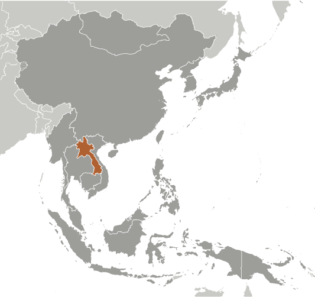
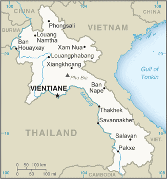
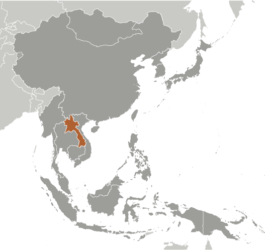
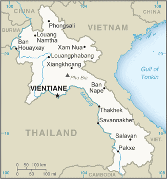

-
Introduction :: Laos
-
Background:Modern-day Laos has its roots in the ancient Lao kingdom of Lan Xang, established in the 14th century under King FA NGUM. For 300 years Lan Xang had influence reaching into present-day Cambodia and Thailand, as well as over all of what is now Laos. After centuries of gradual decline, Laos came under the domination of Siam (Thailand) from the late 18th century until the late 19th century, when it became part of French Indochina. The Franco-Siamese Treaty of 1907 defined the current Lao border with Thailand. In 1975, the communist Pathet Lao took control of the government, ending a six-century-old monarchy and instituting a strict socialist regime closely aligned to Vietnam. A gradual, limited return to private enterprise and the liberalization of foreign investment laws began in 1988. Laos became a member of ASEAN in 1997 and the WTO in 2013.
-
Geography :: Laos
-
Location:Southeastern Asia, northeast of Thailand, west of VietnamGeographic coordinates:18 00 N, 105 00 EMap references:Southeast AsiaArea:total: 236,800 sq kmland: 230,800 sq kmwater: 6,000 sq kmcountry comparison to the world: 85Area - comparative:about twice the size of Pennsylvania; slightly larger than UtahLand boundaries:total: 5,274 kmborder countries (5): Burma 238 km, Cambodia 555 km, China 475 km, Thailand 1845 km, Vietnam 2161 kmCoastline:0 km (landlocked)Maritime claims:none (landlocked)Climate:tropical monsoon; rainy season (May to November); dry season (December to April)Terrain:mostly rugged mountains; some plains and plateausElevation:mean elevation: 710 melevation extremes: 70 m lowest point: Mekong River2817 highest point: Phu BiaNatural resources:timber, hydropower, gypsum, tin, gold, gemstonesLand use:agricultural land: 10.6% (2011 est.)arable land: 6.2% (2011 est.) / permanent crops: 0.7% (2011 est.) / permanent pasture: 3.7% (2011 est.)forest: 67.9% (2011 est.)other: 21.5% (2011 est.)Irrigated land:3,100 sq km (2012)Population distribution:most densely populated area is in and around the capital city of Vientiane; large communities are primarily found along the Mekong River along the southwestern border; overall density is considered one of the lowest in Southeast AsiaNatural hazards:floods, droughtsEnvironment - current issues:unexploded ordnance; deforestation; soil erosion; loss of biodiversity; water pollution, most of the population does not have access to potable waterEnvironment - international agreements:party to: Biodiversity, Climate Change, Climate Change-Kyoto Protocol, Desertification, Endangered Species, Environmental Modification, Hazardous Wastes, Law of the Sea, Ozone Layer Protectionsigned, but not ratified: none of the selected agreementsGeography - note:landlocked; most of the country is mountainous and thickly forested; the Mekong River forms a large part of the western boundary with Thailand
-
People and Society :: Laos
-
Population:7,234,171 (July 2018 est.)country comparison to the world: 101Nationality:noun: Lao(s) or Laotian(s)adjective: Lao or LaotianEthnic groups:Lao 53.2%, Khmou 11%, Hmong 9.2%, Phouthay 3.4%, Tai 3.1%, Makong 2.5%, Katong 2.2%, Lue 2%, Akha 1.8%, other 11.6% (2015 est.)
note: the Laos Government officially recognizes 49 ethnic groups, but the total number of ethnic groups is estimated to be well over 200
Languages:Lao (official), French, English, various ethnic languagesReligions:Buddhist 64.7%, Christian 1.7%, none 31.4%, other/not stated 2.1% (2015 est.)Age structure:0-14 years: 32.19% (male 1,177,639 /female 1,151,134)15-24 years: 21% (male 754,198 /female 764,673)25-54 years: 37.29% (male 1,332,231 /female 1,365,715)55-64 years: 5.57% (male 196,509 /female 206,613)65 years and over: 3.95% (male 129,336 /female 156,123) (2018 est.)population pyramid: The World Factbook Field Image ModalEast Asia/Southeast Asia :: Laos Print
The World Factbook Field Image ModalEast Asia/Southeast Asia :: Laos Print Image DescriptionThis is the population pyramid for Laos. A population pyramid illustrates the age and sex structure of a country's population and may provide insights about political and social stability, as well as economic development. The population is distributed along the horizontal axis, with males shown on the left and females on the right. The male and female populations are broken down into 5-year age groups represented as horizontal bars along the vertical axis, with the youngest age groups at the bottom and the oldest at the top. The shape of the population pyramid gradually evolves over time based on fertility, mortality, and international migration trends.
Image DescriptionThis is the population pyramid for Laos. A population pyramid illustrates the age and sex structure of a country's population and may provide insights about political and social stability, as well as economic development. The population is distributed along the horizontal axis, with males shown on the left and females on the right. The male and female populations are broken down into 5-year age groups represented as horizontal bars along the vertical axis, with the youngest age groups at the bottom and the oldest at the top. The shape of the population pyramid gradually evolves over time based on fertility, mortality, and international migration trends.
For additional information, please see the entry for Population pyramid on the Definitions and Notes page under the References tab.Dependency ratios:total dependency ratio: 60.2 (2015 est.)youth dependency ratio: 54 (2015 est.)elderly dependency ratio: 6.2 (2015 est.)potential support ratio: 16.1 (2015 est.)Median age:total: 23.4 yearsmale: 23 yearsfemale: 23.7 years (2018 est.)country comparison to the world: 170Population growth rate:1.48% (2018 est.)country comparison to the world: 76Birth rate:23.2 births/1,000 population (2018 est.)country comparison to the world: 61Death rate:7.3 deaths/1,000 population (2018 est.)country comparison to the world: 122Net migration rate:-1.1 migrant(s)/1,000 population (2017 est.)country comparison to the world: 140Population distribution:most densely populated area is in and around the capital city of Vientiane; large communities are primarily found along the Mekong River along the southwestern border; overall density is considered one of the lowest in Southeast AsiaUrbanization:urban population: 35% of total population (2018)rate of urbanization: 3.28% annual rate of change (2015-20 est.)Major urban areas - population:665,000 VIENTIANE (capital) (2018)Sex ratio:at birth: 1.03 male(s)/female (2017 est.)0-14 years: 1.02 male(s)/female (2017 est.)15-24 years: 0.99 male(s)/female (2017 est.)25-54 years: 0.97 male(s)/female (2017 est.)55-64 years: 0.96 male(s)/female (2017 est.)65 years and over: 0.83 male(s)/female (2017 est.)total population: 0.99 male(s)/female (2017 est.)Maternal mortality rate:197 deaths/100,000 live births (2015 est.)country comparison to the world: 52Infant mortality rate:total: 48.4 deaths/1,000 live births (2018 est.)male: 53.6 deaths/1,000 live births (2018 est.)female: 43 deaths/1,000 live births (2018 est.)country comparison to the world: 30Life expectancy at birth:total population: 65 years (2018 est.)male: 62.9 years (2018 est.)female: 67.1 years (2018 est.)country comparison to the world: 184Total fertility rate:2.65 children born/woman (2018 est.)country comparison to the world: 66Contraceptive prevalence rate:49.8% (2011/12)Health expenditures:1.9% of GDP (2014)country comparison to the world: 191Physicians density:0.49 physicians/1,000 population (2014)Hospital bed density:1.5 beds/1,000 population (2012)Drinking water source:improved: urban: 85.6% of populationrural: 69.4% of populationtotal: 75.7% of populationunimproved: urban: 14.4% of populationrural: 30.6% of populationtotal: 24.3% of population (2015 est.)Sanitation facility access:improved: urban: 94.5% of population (2015 est.)rural: 56% of population (2015 est.)total: 70.9% of population (2015 est.)unimproved: urban: 5.5% of population (2015 est.)rural: 44% of population (2015 est.)total: 29.1% of population (2015 est.)HIV/AIDS - adult prevalence rate:0.3% (2017 est.)country comparison to the world: 81HIV/AIDS - people living with HIV/AIDS:12,000 (2017 est.)country comparison to the world: 95HIV/AIDS - deaths:<500 (2017 est.)Major infectious diseases:degree of risk: very high (2016)food or waterborne diseases: bacterial and protozoal diarrhea, hepatitis A, and typhoid fever (2016)vectorborne diseases: dengue fever and malaria (2016)Obesity - adult prevalence rate:5.3% (2016)country comparison to the world: 179Children under the age of 5 years underweight:26.5% (2011)country comparison to the world: 15Education expenditures:2.9% of GDP (2014)country comparison to the world: 147Literacy:definition: age 15 and over can read and write (2015 est.)total population: 79.9% (2015 est.)male: 87.1% (2015 est.)female: 72.8% (2015 est.)School life expectancy (primary to tertiary education):total: 11 years (2015)male: 11 years (2015)female: 11 years (2015)Unemployment, youth ages 15-24:total: 1.8% (2010 est.)male: 1.9% (2010 est.)female: 1.6% (2010 est.)country comparison to the world: 168 -
Government :: Laos
-
Country name:conventional long form: Lao People's Democratic Republicconventional short form: Laoslocal long form: Sathalanalat Paxathipatai Paxaxon Laolocal short form: Mueang Lao (unofficial)etymology: name means "Land of the Lao [people]"Government type:communist stateCapital:name: Vientiane (Viangchan)geographic coordinates: 17 58 N, 102 36 Etime difference: UTC+7 (12 hours ahead of Washington, DC, during Standard Time)Administrative divisions:17 provinces (khoueng, singular and plural) and 1 capital city* (nakhon luang, singular and plural); Attapu, Bokeo, Bolikhamxai, Champasak, Houaphan, Khammouan, Louangnamtha, Louangphabang, Oudomxai, Phongsali, Salavan, Savannakhet, Viangchan (Vientiane)*, Viangchan, Xaignabouli, Xaisomboun, Xekong, XiangkhouangIndependence:19 July 1949 (from France by the Franco-Lao General Convention); 22 October 1953 (Franco-Lao Treaty recognizes full independence)National holiday:Republic Day (National Day), 2 December (1975)Constitution:history: previous 1947 (preindependence); latest promulgated 13-15 August 1991 (2018)amendments: proposed by the National Assembly; passage requires at least two-thirds majority vote of the Assembly membership and promulgation by the president of the republic; amended 2003, 2015 (2018)Legal system:civil law system similar in form to the French systemInternational law organization participation:has not submitted an ICJ jurisdiction declaration; non-party state to the ICCtCitizenship:citizenship by birth: nocitizenship by descent only: at least one parent must be a citizen of Laosdual citizenship recognized: noresidency requirement for naturalization: 10 yearsSuffrage:18 years of age; universalJudicial branch:highest courts: People's Supreme Court (consists of the court president and organized into criminal, civil, administrative, commercial, family, and juvenile chambers, each with a vice president and several judges)judge selection and term of office: president of People's Supreme Court appointed by the National Assembly upon the recommendation of the president of the republic for a 5-year term; vice presidents of the People's Supreme Court appointed by the president of the republic upon the recommendation of the National Assembly; appointment of chamber judges NA; tenure of court vice presidents and chamber judges NAsubordinate courts: appellate courts; provincial, municipal, district, and military courtsExecutive branch:chief of state: President BOUNNYANG Vorachit (since 20 April 2016); Vice President PHANKHAM Viphavan (since 20 April 2016)head of government: Prime Minister THONGLOUN Sisoulit (since 20 April 2016); Deputy Prime Ministers BOUNTHONG Chitmani, SONXAI Siphandon, SOMDI Douangdi (since 20 April 2016)cabinet: Council of Ministers appointed by the president, approved by the National Assemblyelections/appointments: president and vice president indirectly elected by the National Assembly for a 5-year term (no term limits); election last held on 20 April 2016 (next to be held in 2021); prime minister nominated by the president, elected by the National Assembly for 5-year termelection results: BOUNNYANG Vorachit (LPRP) elected president; PHANKHAM Viphavan (LPRP) elected vice president; percent of National Assembly vote - NA; THONGLOUN Sisoulit (LPRP) elected prime minister; percent of National Assembly vote - NALegislative branch:description: unicameral National Assembly or Sapha Heng Xat (149 seats; members directly elected in multi-seat constituencies by simple majority vote from candidate lists provided by the Lao People's Revolutionary Party; members serve 5-year terms)elections: last held on 20 March 2016 (next to be held in 2021)election results: percent of vote by party - NA; seats by party - LPRP 144, independent 5Political parties and leaders:Lao People's Revolutionary Party or LPRP [BOUNNYANG Vorachit]
note: other parties proscribed
International organization participation:ADB, ARF, ASEAN, CP, EAS, FAO, G-77, IAEA, IBRD, ICAO, ICRM, IDA, IFAD, IFC, IFRCS, ILO, IMF, Interpol, IOC, IPU, ISO (subscriber), ITU, MIGA, NAM, OIF, OPCW, PCA, UN, UNCTAD, UNESCO, UNIDO, UNWTO, UPU, WCO, WFTU (NGOs), WHO, WIPO, WMO, WTODiplomatic representation in the US:chief of mission: Ambassador MAI Xaignavong (since 3 August 2015)chancery: 2222 S Street NW, Washington, DC 20008telephone: [1] (202) 332-6416FAX: [1] (202) 332-4923consulate(s): New YorkDiplomatic representation from the US:chief of mission: Ambassador Rena BITTER (since 2 November 2016)embassy: Thadeua Road, Kilometer 9, Ban Somvang Tai, Hatsayfong District, Vientianemailing address: American Embassy Vientiane, Unit 46222, APO AP 96546-6222telephone: [856] 21-48-7000FAX: [856] 21-48-7190Flag description:three horizontal bands of red (top), blue (double width), and red with a large white disk centered in the blue band; the red bands recall the blood shed for liberation; the blue band represents the Mekong River and prosperity; the white disk symbolizes the full moon against the Mekong River, but also signifies the unity of the people under the Lao People's Revolutionary Party, as well as the country's bright futureNational symbol(s):elephant; national colors: red, white, blueNational anthem:name: "Pheng Xat Lao" (Hymn of the Lao People)lyrics/music: SISANA Sisane/THONGDY Sounthonevichitnote: music adopted 1945, lyrics adopted 1975; the anthem's lyrics were changed following the 1975 Communist revolution that overthrew the monarchy
-
Economy :: Laos
-
Economy - overview:
The government of Laos, one of the few remaining one-party communist states, began decentralizing control and encouraging private enterprise in 1986. Economic growth averaged more than 6% per year in the period 1988-2008, and Laos' growth has more recently been amongst the fastest in Asia, averaging more than 7% per year for most of the last decade.
Nevertheless, Laos remains a country with an underdeveloped infrastructure, particularly in rural areas. It has a basic, but improving, road system, and limited external and internal land-line telecommunications. Electricity is available to 83% of the population. Agriculture, dominated by rice cultivation in lowland areas, accounts for about 20% of GDP and 73% of total employment. Recently, the country has faced a persistent current account deficit, falling foreign currency reserves, and growing public debt.
Laos' economy is heavily dependent on capital-intensive natural resource exports. The economy has benefited from high-profile foreign direct investment in hydropower dams along the Mekong River, copper and gold mining, logging, and construction, although some projects in these industries have drawn criticism for their environmental impacts.
Laos gained Normal Trade Relations status with the US in 2004 and applied for Generalized System of Preferences trade benefits in 2013 after being admitted to the World Trade Organization earlier in the year. Laos held the chairmanship of ASEAN in 2016. Laos is in the process of implementing a value-added tax system. The government appears committed to raising the country's profile among foreign investors and has developed special economic zones replete with generous tax incentives, but a limited labor pool, a small domestic market, and corruption remain impediments to investment. Laos also has ongoing problems with the business environment, including onerous registration requirements, a gap between legislation and implementation, and unclear or conflicting regulations.
GDP (purchasing power parity):$49.34 billion (2017 est.)$46.16 billion (2016 est.)$43.13 billion (2015 est.)note: data are in 2017 dollars
country comparison to the world: 111GDP (official exchange rate):$16.97 billion (2017 est.) (2017 est.)GDP - real growth rate:6.9% (2017 est.)7% (2016 est.)7.3% (2015 est.)country comparison to the world: 22GDP - per capita (PPP):$7,400 (2017 est.)$7,000 (2016 est.)$6,600 (2015 est.)note: data are in 2017 dollars
country comparison to the world: 155Gross national saving:22.7% of GDP (2017 est.)21.3% of GDP (2016 est.)15.8% of GDP (2015 est.)country comparison to the world: 79GDP - composition, by end use:household consumption: 63.7% (2017 est.)government consumption: 14.1% (2017 est.)investment in fixed capital: 30.9% (2017 est.)investment in inventories: 3.1% (2017 est.)exports of goods and services: 34.6% (2017 est.)imports of goods and services: -43.2% (2017 est.)GDP - composition, by sector of origin:agriculture: 20.9% (2017 est.)industry: 33.2% (2017 est.)services: 45.9% (2017 est.)Agriculture - products:sweet potatoes, vegetables, corn, coffee, sugarcane, tobacco, cotton, tea, peanuts, rice; cassava (manioc, tapioca), water buffalo, pigs, cattle, poultryIndustries:mining (copper, tin, gold, gypsum); timber, electric power, agricultural processing, rubber, construction, garments, cement, tourismIndustrial production growth rate:8% (2017 est.)country comparison to the world: 23Labor force:3.582 million (2017 est.)country comparison to the world: 100Labor force - by occupation:agriculture: 73.1%industry: 6.1%services: 20.6% (2012 est.)Unemployment rate:0.7% (2017 est.)0.7% (2016 est.)country comparison to the world: 4Population below poverty line:22% (2013 est.)Distribution of family income - Gini index:36.7 (2008)34.6 (2002)country comparison to the world: 87Budget:revenues: 3.099 billion (2017 est.)expenditures: 4.038 billion (2017 est.)Taxes and other revenues:18.3% (of GDP) (2017 est.)country comparison to the world: 161Budget surplus (+) or deficit (-):-5.5% (of GDP) (2017 est.)country comparison to the world: 172Public debt:63.6% of GDP (2017 est.)58.4% of GDP (2016 est.)country comparison to the world: 64Fiscal year:1 October - 30 SeptemberInflation rate (consumer prices):0.8% (2017 est.)1.6% (2016 est.)country comparison to the world: 42Central bank discount rate:4.3% (31 December 2010)4% (31 December 2009)country comparison to the world: 86Commercial bank prime lending rate:18.5% (31 December 2017 est.)18% (31 December 2016 est.)country comparison to the world: 18Stock of narrow money:$1.131 billion (31 December 2017 est.)$1.1 billion (31 December 2016 est.)country comparison to the world: 155Stock of broad money:$1.131 billion (31 December 2017 est.)$1.1 billion (31 December 2016 est.)country comparison to the world: 160Stock of domestic credit:$9.3 billion (31 December 2017 est.)$8.623 billion (31 December 2016 est.)country comparison to the world: 108Current account balance:-$2.057 billion (2017 est.)-$2.07 billion (2016 est.)country comparison to the world: 165Exports:$3.654 billion (2017 est.)$2.705 billion (2016 est.)country comparison to the world: 121Exports - partners:Thailand 42.6%, China 28.7%, Vietnam 10.4%, India 4.4% (2017)Exports - commodities:wood products, coffee, electricity, tin, copper, gold, cassavaImports:$4.976 billion (2017 est.)$4.739 billion (2016 est.)country comparison to the world: 131Imports - commodities:machinery and equipment, vehicles, fuel, consumer goodsImports - partners:Thailand 59.1%, China 21.5%, Vietnam 9.8% (2017)Reserves of foreign exchange and gold:$1.27 billion (31 December 2017 est.)$940.1 million (31 December 2016 est.)country comparison to the world: 128Debt - external:$14.9 billion (31 December 2017 est.)$12.9 billion (31 December 2016 est.)country comparison to the world: 104Stock of direct foreign investment - at home:$15.14 billion (31 December 2012 est.)$12.44 billion (31 December 2011 est.)country comparison to the world: 89Exchange rates:kips (LAK) per US dollar -8,231.1 (2017 est.)8,129.1 (2016 est.)8,129.1 (2015 est.)8,147.9 (2014 est.)8,049 (2013 est.) -
Energy :: Laos
-
Electricity access:population without electricity: 900,000 (2013)electrification - total population: 87% (2013)electrification - urban areas: 97% (2013)electrification - rural areas: 82% (2013)Electricity - production:29.74 billion kWh (2016 est.)country comparison to the world: 66Electricity - consumption:5.471 billion kWh (2016 est.)country comparison to the world: 120Electricity - exports:8.469 billion kWh (2015 est.)country comparison to the world: 24Electricity - imports:2.5 billion kWh (2016 est.)country comparison to the world: 53Electricity - installed generating capacity:6.94 million kW (2016 est.)country comparison to the world: 75Electricity - from fossil fuels:28% of total installed capacity (2016 est.)country comparison to the world: 186Electricity - from nuclear fuels:0% of total installed capacity (2017 est.)country comparison to the world: 124Electricity - from hydroelectric plants:72% of total installed capacity (2017 est.)country comparison to the world: 15Electricity - from other renewable sources:1% of total installed capacity (2017 est.)country comparison to the world: 157Crude oil - production:0 bbl/day (2017 est.)country comparison to the world: 158Crude oil - exports:0 bbl/day (2015 est.)country comparison to the world: 151Crude oil - imports:0 bbl/day (2015 est.)country comparison to the world: 149Crude oil - proved reserves:0 bbl (1 January 2018 est.)country comparison to the world: 154Refined petroleum products - production:0 bbl/day (2015 est.)country comparison to the world: 162Refined petroleum products - consumption:18,000 bbl/day (2016 est.)country comparison to the world: 146Refined petroleum products - exports:0 bbl/day (2015 est.)country comparison to the world: 169Refined petroleum products - imports:17,460 bbl/day (2015 est.)country comparison to the world: 132Natural gas - production:0 cu m (2017 est.)country comparison to the world: 154Natural gas - consumption:0 cu m (2017 est.)country comparison to the world: 165Natural gas - exports:0 cu m (2017 est.)country comparison to the world: 135Natural gas - imports:0 cu m (2017 est.)country comparison to the world: 146Natural gas - proved reserves:0 cu m (1 January 2014 est.)country comparison to the world: 155Carbon dioxide emissions from consumption of energy:10.42 million Mt (2017 est.)country comparison to the world: 105
-
Communications :: Laos
-
Telephones - fixed lines:total subscriptions: 1,125,469 (2017 est.)subscriptions per 100 inhabitants: 16 (2017 est.)country comparison to the world: 75Telephones - mobile cellular:total subscriptions: 3,711,813 (2017 est.)subscriptions per 100 inhabitants: 52 (2017 est.)country comparison to the world: 131Telephone system:general assessment: service to public is generally improving; the government relies on a radiotelephone network to communicate with remote areas; regulatory reform below industry standards; low fixed-broadband penetration due to dominance of mobile platforms; strong boost in mobile broadband penetration but still low compared to other Asian markets; development of mobile broadband internet services given the expansion of 4G services (2017)domestic: fixed-line 16 per 100 and 52 per 100 for mobile-cellular subscriptions (2017)international: country code - 856; satellite earth station - 1 Intersputnik (Indian Ocean region) and a second to be developed by China (2017)Broadcast media:6 TV stations operating out of Vientiane - 3 government-operated and the others commercial; 17 provincial stations operating with nearly all programming relayed via satellite from the government-operated stations in Vientiane; Chinese and Vietnamese programming relayed via satellite from Lao National TV; broadcasts available from stations in Thailand and Vietnam in border areas; multi-channel satellite and cable TV systems provide access to a wide range of foreign stations; state-controlled radio with state-operated Lao National Radio (LNR) broadcasting on 5 frequencies - 1 AM, 1 SW, and 3 FM; LNR's AM and FM programs are relayed via satellite constituting a large part of the programming schedules of the provincial radio stations; Thai radio broadcasts available in border areas and transmissions of multiple international broadcasters are also accessible (2012)Internet country code:.laInternet users:total: 1.258 million (July 2016 est.)percent of population: 18.2% (July 2016 est.)country comparison to the world: 129Broadband - fixed subscriptions:total: 27,217 (2017 est.)subscriptions per 100 inhabitants: less than 1 (2017 est.)country comparison to the world: 143
-
Transportation :: Laos
-
National air transport system:number of registered air carriers: 1 (2015)inventory of registered aircraft operated by air carriers: 11 (2015)annual passenger traffic on registered air carriers: 1,181,187 (2015)annual freight traffic on registered air carriers: 1,356,497 mt-km (2015)Civil aircraft registration country code prefix:RDPL (2016)Airports:41 (2013)country comparison to the world: 104Airports - with paved runways:total: 8 (2017)2,438 to 3,047 m: 3 (2017)1,524 to 2,437 m: 4 (2017)914 to 1,523 m: 1 (2017)Airports - with unpaved runways:total: 33 (2013)1,524 to 2,437 m: 2 (2013)914 to 1,523 m: 9 (2013)under 914 m: 22 (2013)Pipelines:540 km refined products (2013)Roadways:total: 39,586 km (2009)paved: 5,415 km (2009)unpaved: 34,171 km (2009)country comparison to the world: 89Waterways:4,600 km (primarily on the Mekong River and its tributaries; 2,900 additional km are intermittently navigable by craft drawing less than 0.5 m) (2012)country comparison to the world: 23Merchant marine:total: 1 (2017)by type: general cargo 1 (2017)country comparison to the world: 173
-
Military and Security :: Laos
-
Military expenditures:0.2% of GDP (2013)0.22% of GDP (2012)0.23% of GDP (2011)country comparison to the world: 151Military branches:Lao People's Armed Forces (LPAF): Lao People's Army (LPA, includes Riverine Force), Air Force (2011)Military service age and obligation:18 years of age for compulsory or voluntary military service; conscript service obligation - minimum 18-months (2012)Military - note:serving one of the world's least developed countries, the Lao People's Armed Forces (LPAF) is small, poorly funded, and ineffectively resourced; its mission focus is border and internal security, primarily in countering ethnic Hmong insurgent groups; together with the Lao People's Revolutionary Party and the government, the Lao People's Army (LPA) is the third pillar of state machinery, and as such is expected to suppress political and civil unrest and similar national emergencies; there is no perceived external threat to the state and the LPA maintains strong ties with the neighboring Vietnamese military (2012)
-
Transnational Issues :: Laos
-
Disputes - international:southeast Asian states have enhanced border surveillance to check the spread of avian flutalks continue on completion of demarcation with Thailand but disputes remain over islands in the Mekong River; Cambodia and Laos have a longstanding border demarcation disputeconcern among Mekong River Commission members that China's construction of eight dams on the Upper Mekong River and construction of more dams on its tributaries will affect water levels, sediment flows, and fisheriesCambodia and Vietnam are concerned about Laos' extensive plans for upstream dam construction for the same reasonsTrafficking in persons:current situation: Laos is a source and, to a lesser extent, transit and destination country for men, women, and children subjected to forced labor and sex trafficking; Lao economic migrants may encounter conditions of forced labor or sexual exploitation in destination countries, most often Thailand; Lao women and girls are exploited in Thailand’s commercial sex trade, domestic service, factories, and agriculture; a small, possibly growing, number of Lao women and girls are sold as brides in China and South Korea and subsequently sex trafficked; Lao men and boys are victims of forced labor in the Thai fishing, construction, and agriculture industries; some Lao children, as well as Vietnamese and Chinese women and girls, are subjected to sex trafficking in Laos; other Vietnamese and Chinese, and possibly Burmese, adults and girls transit Laos for sexual and labor exploitation in neighboring countries, particularly Thailandtier rating: Tier 2 Watch List – Laos does not fully comply with the minimum standards for the elimination of trafficking; however, it is making significant efforts to do so; authorities sustained moderate efforts to investigate, prosecute, and convict trafficking offenders; the government failed to make progress in proactively identifying victims exploited within the country or among those deported from abroad; the government continues to rely almost entirely on local and international organizations to provide and fund services to trafficking victims; although Lao men and boys are trafficked, most protective services are only available to women and girls, and long-term support is lacking; modest prevention efforts include the promotion of anti-trafficking awareness on state-controlled media (2015)Illicit drugs:estimated opium poppy cultivation in 2015 was estimated to be 5,700 hectares, compared with 6,200 hectares in 2014; estimated potential production of between 84 and 176 mt of raw opium; unsubstantiated reports of domestic methamphetamine production; growing domestic methamphetamine problem
East Asia/Southeast Asia ::
Laos